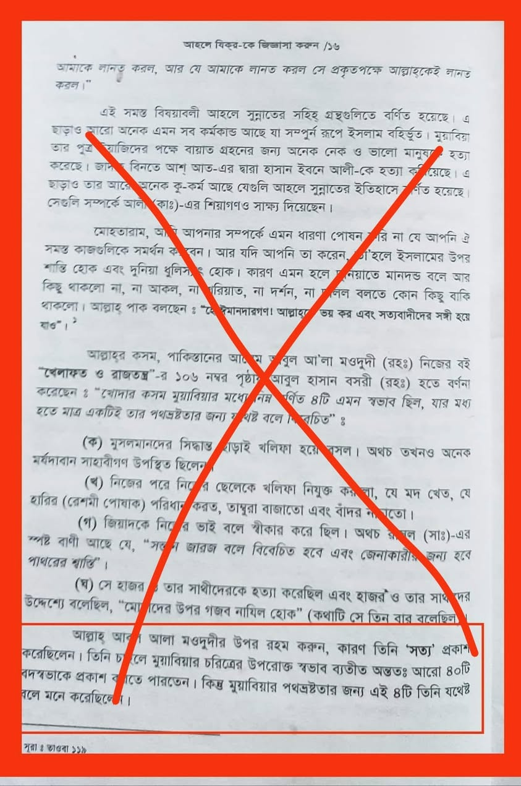

মারহুম মওদুদি আমিরে মুয়াবিয়া রা-এর প্রতি নিঃসন্দেহে জুলম করেছেন। মুয়াবিয়া রা-এর…
৯ আগস্ট, ২০২৩
মারহুম মওদুদি আমিরে মুয়াবিয়া রা-এর প্রতি নিঃসন্দেহে জুলম করেছেন। মুয়াবিয়া রা-এর বিরুদ্ধে ঐতিহাসিক যা বর্ণনা পেয়েছেন, তা-ই গ্রহণ করে নিয়েছেন। শুদ্ধাশুদ্ধি যাচাইয়ের প্রয়োজন বোধ করেন নাই।
উদাহরণস্বরূপ নিচের পিক দেখতে পারেন।
যেখানে আমিরে মুয়াবিয়ার সমালোচনায় ইমাম হাসান বসরি রাহ. থেকে একটি বর্ণনা উল্লেখ করা হয়েছে।
এটি বর্ণিত আছে, (তারিখে তাবারি-২/২৩২, আল কামিল, ইবনুল আসির- ৪/৪৮৭, আল-বিদায়া ওয়ান-নিহায়া, ইবনু কাসির-৮/৯০)
অথচ, এ বর্ণনার সনদ কখনোই বিশুদ্ধ নয়।
কারণ, তার বর্ণনাকারী হচ্ছে আবু মিখনাফ লূথ বিন ইয়াহইয়া। (মৃত্যু- ১৭০ হিজরি)
সে ছিল বিখ্যাত কট্টর শিয়া-রাফেজি ইতিহাসবেত্তা। আহলেসুন্নাহর কেউ-ই তার বর্ণিত হাদিস কিংবা তারিখ দলিল হিসেবে গ্রহণ করেন নাই। তার সমালোচনা করেছেন জরাহ ও তাদিলের ইমাম ইয়াহইয়া বিন মায়িন, আবু হাতিম রাজি, ইবনু আদি, মানসুর ইবনু ইরাক, দারাকুতনি, শামসুদ্দিন জাহাবি, ইবনু হাজার আসকালানি, মুরতাজা যাবিদি রাহ. সহ অগণিত ইমাম। কেউ বলেছেন জয়িফ, কেউ মাতরুক, কেউ কাজ্জাব আখ্যা দিয়েছেন।
এরকম লোকের বর্ণনা একজন জলিলুল কদর সাহাবির বিরুদ্ধে গ্রহণ করার সুযোগ নেই কোনো। উপরন্তু, হাসান বসরি রাহ. থেকে আমিরে মুয়াবিয়ার দিফামূলক বর্ণনা বিশুদ্ধ সনদে প্রমাণিত আছে। যেমন: ইবনু আসাকির রাহ. বর্ণনা করেন,
قيل للحسن يا أبا سعيد إن ها هنا قوما يشتمون أو يلعنون معاوية وابن الزبير فقال على أولئك الذين يلعنون لعنة الله
হাসান বসরিকে বলা হল, হে আবু সাঈদ! এখানে একদল লোক মুয়াবিয়া ও ইবনু যুবাইর-এর সমালোচনা করে বা তাদের অভিশাপ দেয়। তখন তিনি বললেন: যারা অভিশাপ দেয়, তাদের ওপর আল্লাহর অভিশাপ বর্ষিত হোক।
[তারিখে দিমাশক- ৫৯/২০৬] সনদ সহিহ।
এই হাসান বসরি রাহ. আবার আমিরে মুয়াবিয়া রা-এর মতো সাহাবি, যিনি কাতিবে ওহি, তার এমন নগ্ন সমালোচনা করেছেন, এটা অবিশ্বাস্য কথা। এত্থেকে সহজে অনুমেয় যে, এটি আবু মিখনাফ রাফিজির বানোয়াট বর্ণনা, যা ইমাম হাসান বসরির নামে মিথ্যাচার বৈ কিছু না। কিন্তু মারহুম মওদুদি এসব যাচাইয়ের কোনো প্রয়োজন বোধ করলেন না। একজন মহান সাহাবির প্রতি জুলম করাই হয়ত উদ্দেশ্য ছিল তাই।
